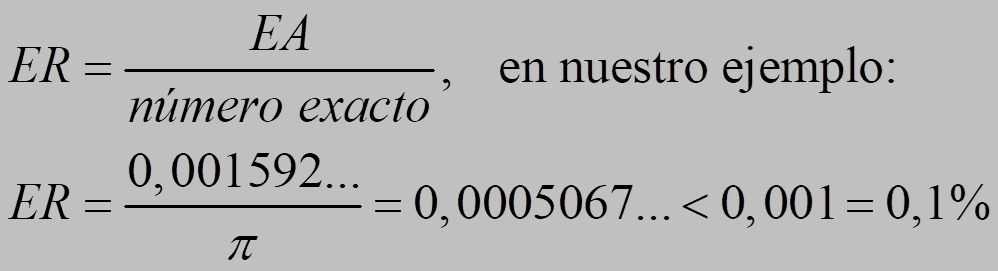

Usamos habitualmente números aproximados porque no es necesario o conveniente dar la cantidad exacta o no la podemos calcular con precisión.
Por ejemplo, si sabemos que alguien ha ganado 303 215 € en la lotería, decimos que ha ganado unos 300 000 €; cuando medimos una mesa con un metro, podemos decir la medida en centímetros o milímetros, pero no la podemos decir con más precisión.
Una estimación de un número real es otro número real próximo al dado. Una aproximación de orden n de un número es una estimación de dicho número en la que se prescinde de las cifras de órdenes de unidad inferiores a n. Puede ser:
–Por defecto, si todas las cifras de la estimación son exactas (es menor que el número)
–Por exceso, si son exactas todas las cifras excepto la que indica el orden, que es una unidad mayor (es mayor que el número)
Ejemplo: 3,14 es la aproximación por defecto de π a las centésimas y 3,15 lo es por exceso.
El redondeo de orden n de un número es la aproximación de orden n más próxima al número. Para ello se observa la primera cifra que se quita en la aproximación y:
–si es menor que cinco, se deja como está
–si es mayor o igual que cinco, se aumenta una unidad la cifra de orden n.
Ejemplo: 3,14 es el redondeo de π a las centésimas.
Cuando hablamos de números aproximados estamos cometiendo un error, la resta entre el número exacto y el aproximado. Esta diferencia se llama error absoluto.
Por ejemplo, si usamos 3,14 para aproximar π, entonces: EA = |π – 3,14| = 0,001592…<0,01
En este ejemplo, no sabemos el error exacto pero podemos controlarlo o acotarlo, decimos que es menor que una centésima.
Para comparar errores, usamos el error relativo :

Ejercicios
1.- Aproxima por defecto y exceso y redondea 1/3, √2 y e a las centésimas.
2.- Calcula los errores cometidos cuando aproximamos 1/3 por 0,3 o e por 2,7
Soluciones:
1.-
| número | defecto | exceso | redondeo |
| 1/3 | 0,33 | 0,34 | 0,33 |
| √2 | 1,41 | 1,42 | 1,41 |
| e | 2,71 | 2,72 | 2,72 |
2.-
| número | error absoluto | error relativo |
| 1/3 | 1/30 | 1/10=10% |
| e | 0,01828...< 0,1 | 0,0067...<0,01=1% |